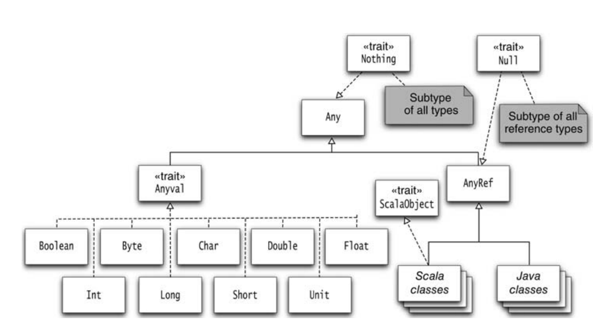

Copyright © Cay S. Horstmann 2015 
This work is licensed under a Creative Commons Attribution 4.0 International License
Map[K, V]Map[String, Int], Map[Person, Person], ...def getMiddle[T](a: Vector[T]) = a(a.length / 2)
getMiddle[Int], getMiddle[String], ...Pair type where both components have the same type:
class Pair[T](val first: T, val second: T)
class Pair[T](val first: T, val second: T) {
def smaller = if (first.compareTo(second) < 0) first else second // Error
}
T has a comparable methodclass Pair[T <: Comparable[T]]
T must be a subtype of Comparable[T]<: TStudent extends Person, then Student <: PersonVector[Int] <: Seq[Int]Int a subtype of Double? Not in Scala—but there is an automatic conversion from Int to Double.
Null is a subtype of all Scala typesNothing is a supertype of all Scala typesUnit is a subype of all Scala typesUnitPair class with replaceFirst method:
class Pair[T](val first: T, val second: T) {
def replaceFirst(newFirst: T) = new Pair[T](newFirst, second)
}
Note that replaceFirst returns a new object—Pair is immutablePair[Student] and a Person object. Can we call
students.replaceFirst(person)
Pair[Person].T.def replaceFirst[R >: T](newFirst: R) = new Pair[R](newFirst, second)
def replaceFirst[R >: T](newFirst: R) = new Pair(newFirst, second)
class Pair[T : Ordering]requires an implicit value of type
Ordering[T]Ordering[T] defines a method compare(T, T)Pair[Int]implicit object NameDoesNotMatter extends Ordering[Int] {
def compare(a: Int, b: Int) = if (a < b) -1 else if (a > b) 1 else 0
}implicitly fetches implicit object:
class Pair[T : Ordering](val first: T, val second: T) {
def smaller =
if (implicitly[Ordering[T]].compare(first, second) < 0) first else second
}
class Person(val name: String) class Student(name: String, val major: String) extends Person(name)and the
Pair class from the “Lower Bounds” slide
class Pair[T](val first: T, val second: T) {
def replaceFirst[R >: T](newFirst: T) = new Pair(newFirst, second)
}
make a Pair[Student], and then replace the first element with a Person object. What is the type of the result? Why?
Pair[Person], and replacing the first element with a Student object. What is the type of the result? Why?replaceFirst method:
def replaceFirst[R](newFirst: T) = new Pair(newFirst, second)Note that the method still compiles. Repeat the preceding experiments, replacing the first element in a
Pair[Student] and Pair[Person]. Which of them still work? Pay close attention to the types of the returned pairs!
swap that swaps the components of a 2-tuple. For example, swap((2, "Hi")) should be ("Hi", 2)sort that sorts the components of a 2-tuple of type (T, T) (where both components have the same type). Require the type to implement the Comparable interface. Hint: Swap them if they are not in order. For example, sort(("Hi", "Bye")) should be ("Bye", "Hi").sort that sorts the components of a 2-tuple of type (T, T), given a comparison function. For example,
sort(("Hi", "Bye"), (s: String, t: String) => s.length - t.length)sort((4, 3), _ - _)
csort so that csort((4, 3))(_ - _) works.sort method from Part 2 with the pair (4, 3)? Int does not implement Comparable[Int]. It's actually not easy to verify that. But try this:
val x1 = 3 x1.getClass val x2: Comparable[Int] = 3 x2.getClassWhat are the classes of
x1 and x2?RichInt when needed. In the Scaladoc of RichInt, click on “Linear Supertypes”. Note that Comparable[Int] is a supertype. So, the following should work:
import scala.runtime.RichInt sort((new RichInt(4), new RichInt(3)))But it doesn't. Why? (Hint: What is
T in this case? What is Comparable[T]? Is T a subtype of Comparable<T>?)
<% T, to indicate that S can be implicitly converted to a subtype of T. In the definition of sort, change <: to <%. Can you now sort a pair of Int? A pair of RichInt? Explain why.Comparable interface is used in Java. In Scala, we prefer Ordered. Consider this method:
def osort[T <: Ordered[T]](pair: (T, T)) = if (pair._1 < pair._2) pair else swap(pair)What happens if you call
osort(("Hi", "Bye"))?java.lang.String is automatically converted to when an Ordered[String] is needed.)<% trick is a bit icky, and it's no longer recommended. Instead, use a context bound. Complete the following function, using the same logic as in the “Context Bounds” slide.
def psort[T : Ordering](pair: (T, T)) = ...
psort works for pairs of strings and integers. What did you try?class Point(val x: Double, val y: Double) {
override def toString = s"(${x},${y})"
Point objects to psort?
implicit object NameDoesNotMatter extends Ordering[Point] {
def compare(a: Point, b: Point) = ...psort in the preceding step?